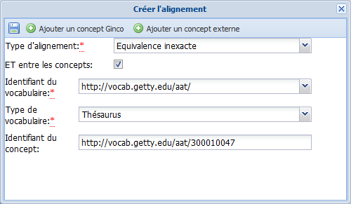
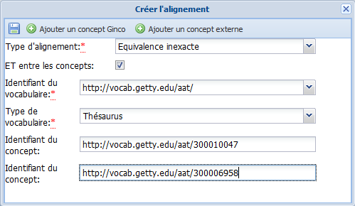

Équivalences complexes
Équivalence complexe ?⚓
ConceptÉquivalence complexe⚓
Dans le cadre des relations d'équivalence, il est possible d'aligner un Concept source sur 2 concepts (ou plus) d'un vocabulaire cible, associés par une relation ET ou OU. Ce type d'alignement s'appelle Équivalence complexe.
Création d'une équivalence complexe⚓
ProcédureCréer une équivalence complexe⚓
Créez un alignement de type
Équivalence exacteouÉquivalence inexactevers le premier Concept concerné.ExempleExemple⚓
Remarque
ETouOU⚓La case à cocher
ET entre les conceptspermet de paramétrer le type de relation à établir entre les concepts cibles pour obtenir une portée sémantique équivalente ou partiellement équivalente à celle du concept source.Si la case
ETest cochée, alors la portée du Concept source a pour équivalent l'intersection des portées des concepts cibles (relationET).Si la case
ETn'est pas cochée, alors la portée du Concept source a pour équivalent l'union des portées des Concepts cibles (relationOU).
ExempleExemples⚓
Concept du vocabulaire source "énergies fossiles" aligné sur les concepts "charbon" OU "pétrole" OU "gaz naturel" dans le vocabulaire cible.
Concept du vocabulaire source "sécurité des passagers dans les chemins de fer" aligné sur les concepts "transport ferroviaire" ET "sécurité des personnes" dans le vocabulaire cible.
RéglementaireEn savoir plus⚓
Pour savoir comment créer un alignement : Alignements
Cliquez sur le bouton

Ajouter un concept Gincoou Ajouter un concept externe, selon que vous êtes en train de créer un alignement interne ou externe.Un second champ de saisie
Identifiant du conceptest ajouté dans la fenêtreCréer l'alignement.
Saisissez l'identifiant du deuxième Concept concerné par l'équivalence complexe.
ExempleExemple⚓
Si besoin, répétez les 2 étapes précédentes pour ajouter d'autres Concepts concernés par l'équivalence complexe.
Cliquez sur

Enregistrerpour sauvegarder vos modifications.La fenêtre
Créer l'alignementse referme.
Cliquez sur
Enregistrerpour sauvegarder les modifications apportées auConcept.